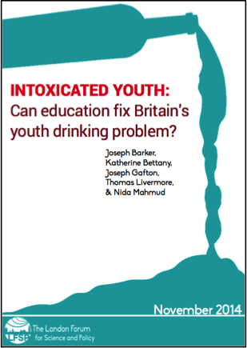

Policy
Intoxicated Youth: Can Education Fix Britain's Youth Drinking Problem?

While rates of alcohol consumption among young people have shown an encouraging decline in recent years, underage drinking within the UK remains among the worst in Europe. On top of this, actual drinking practices show a hazardous trend towards more extreme behaviours like binge drinking. This paper examines how different settings and kinds of education can influence these problems. Based on this analysis, recommendations for future policy are presented. Read the full paper (PDF).